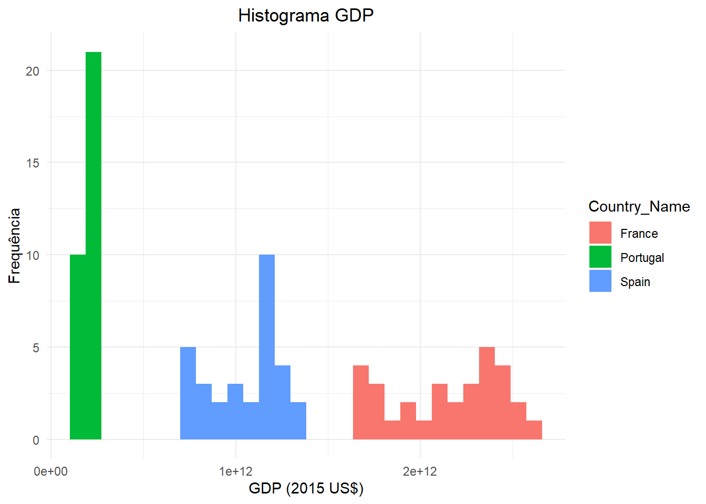

#manipular dados
library(tidyverse)Dados Económicos
Os dados são fundamentais para a análise econométrica. Neste capítulo, vamos explorar os diferentes tipos de dados económicos, as suas características específicas e como manipulá-los adequadamente.
Tipos de dados
Existem dois tipos principais de dados: quantitativos e qualitativos. Os dados quantitativos são dados numéricos que podem ser medidos, enquanto os dados qualitativos são dados categóricos que não podem ser medidos, mas podem ser classificados.
Dados Quantitativos
Os dados quantitativos podem ser subdivididos em dados discretos e dados contínuos.
- Os dados discretos assumem valores inteiros e contáveis. Por exemplo, o número de filhos, o número de alunos de uma turma, etc.
- Os dados contínuos podem assumir qualquer valor dentro de um intervalo. Por exemplo, a altura de uma pessoa, o peso de um objeto ou a temperatura de uma região.
Existem dados contínuos mas que são medidos como os discretos. Isto acontece porque muitas vezes utilizamos uma escala de medição que limita a precisão da medida. Por exemplo, a altura de uma pessoa pode ser medida em centímetros, mas muitas vezes é arredondada para o inteiro mais próximo, como 169 cm. Contudo, sabemos que a altura real pode ser 169,2 cm ou 168,888(8) cm.
Dados qualitativos
Os dados qualitativos são dados categóricos que não podem ser medidos, mas podem ser classificados. Existem dois tipos de dados qualitativos: dados nominais e dados ordinais.
Os dados nominais são dados categóricos que não podem ser ordenados. Exemplos de dados nominais são a cor dos olhos, o estado civil, etc.
Os dados ordinais são dados categóricos que podem ser ordenados. Exemplos de dados ordinais são o grau de satisfação, a classe social, nível de escolaridade, classe etária, etc.
Estrutura de dados
Dados seccionais: dados recolhidos num único momento de tempo. Em termos de numenclatura referimos que \(\color{purple}i\) é o número de observações (entidades). Uma entidade pode ser um país, um distrito, uma empresa, um indivíduo.
Tabela 1: Exemplo da estrutura de dados seccionais O id representa as entidades. ID, genericamente, significa identificador. Y,X,W,Z são variáveis. id Y X W Z 1 2 3 4 … Séries temporais: dados recolhidos ao longo do tempo. \(\color{purple}t\) é o número de observações (tempo). Os dados são recolhidos para uma única entidade. As séries temporais podem ter frequência anual, semestral, trimestral, mensal, diária (5 dias úteis ou 7 dias por semana), intradiáriários (horários, minutos, segundos), etc.
Tabela 2: Exemplo da estrutura de séries temporais (dados anuais) time Y X W Z 2020 2021 2022 2023 … Dados em painel: dados recolhidos ao longo do tempo de forma consecutiva e para várias entidades do mesmo tipo. São uma conjugação das características dos dados seccionais e das séries temporais. \(\color{purple}i\) é o número de entidades e \(\color{purple}t\) é o número de observações (tempo). \(\color{purple}N\) é o número de observações do painel \(\color{purple}N = i\times t\).
Tabela 3: Exemplo da estrutura de dados em painel país ano Y X W Z PT 2021 PT 2022 PT 2023 ES 2021 ES 2022 ES 2023
Os painéis podem ser:
balanceados: todas as entidades têm o mesmo número de observações.
não balanceados: as entidades têm um número diferente de observações.
macropainel: em que o \(\color{purple}t>i\).
micropainel: em que o \(\color{purple}t<i\).
Na estrutura de dados em painel a frequência dos dados é a mesma para todas as entidades, sendo que as entidades são todas do mesmo tipo.
- Dados espaciais: dados recolhidos no espaço (e.g. dados geográficos)
- dados vetoriais: dados representados por pontos (exemplo: localização de cidades), linhas (exemplo: estradas) ou polígonos (exemplo: fronteiras de países)
- dados raster : dados representados por uma grelha de células (exemplo: mapas de calor)
Fontes de dados
Os dados podem ser classificados em duas categorias: dados primários e dados secundários. Os dados primários são dados que são recolhidos diretamente pelo investigador (por exemplos: questionários, entrevistas, ou mesmo através de experiências). Os dados secundários são dados que são recolhidos por outra pessoa ou organização (por exemplo: Bando de Portugal, INE, Eurostat, Banco Mundial, etc).
Alguns exemplos de fontes de dados oficiais:
- World Development Indicators do Banco Mundial- https://databank.worldbank.org/
- Eurostat - https://ec.europa.eu/eurostat
- INE (Instituto Nacional de Estatística) - https://www.ine.pt/
- Banco de Portugal - https://bpstat.bportugal.pt/
O processo para obter dados é relativamente semelhantes entre as várias fontes oficiais, mesmo sem um link direto. Esta costuma ser padrão:
- Aceder ao site genérico
- Procurar o separador ou secção “Dados” / “Estatísticas”
- Selecionar o conjunto de dados através do esquema em árvore ou por temas
- Selecionar amostra e horizonte temporal
- Seguir as instruções para download ou visualização
Dependendo da fontes dos dados, pode ser possível recolher várias variáveis em simultâneo ou apenas uma. No caso do segundo é necessário juntar os dados (próxima secção) através de um identificador comum. Este identificador deve ser único para cada observação e deve estar presente em todos os conjuntos de dados que pretendemos combinar. O identificar pode ser uma ou mais colunas. Para séries temporais é a colunas de tempo (ano, mês, etc) e para dados em painel são as colunas de identificação das entidades (exemplo: país, região, empresa, etc) e de tempo (ano, mês, etc).
É muito importante perceber se a fonte dos dados é fidedigna. Por vezes também é necessário analsiar a metodologia de recolha ou cálculo de uma determinada variável. Por exemplo nonaco mundial quando recolhemos uma variável e que por
Preparar os dados
Carregar o package dplyr ou o tidyverse. O tidyverse é um conjunto de packages, como ggplot2, dplyr e o tidyr que é utilizado dinamizar ou anular a dinamização de colunas. Mais informação do package tidyr aqui. Mais informação acerca do package dplyr aqui.
Recolher dados
Para este exemplo vamos utilizar os do WDI para Portugal, Espanha e France com o hironte temporal 1960-2024.
As variáveis selecionais são:
| Indicador | Código |
|---|---|
| GDP (constant LCU) | NY.GDP.MKTP.KN |
| GDP (current LCU) | NY.GDP.MKTP.CN |
| GDP deflator (base year varies by country) | NY.GDP.DEFL.ZS |
| Exports of goods and services (constant LCU) | NE.EXP.GNFS.KN |
| Imports of goods and services (constant LCU) | NE.IMP.GNFS.KN |
| Trade (% of GDP) | NE.TRD.GNFS.ZS |
| Population, total | SP.POP.TOTL |
LCU significa “Local Currency Unit” que neste caso são Euros. Podemos aceder ao site https://databank.worldbank.org/ e selecionar os dados ou utilizar o package WDI. Para este exemplo vamos recolher os dados através do package.
#limpar ambiente
rm(list=ls())
#carregar biblioteca
library(WDI)
dados <- WDI::WDI(country = c("PT", "ES", "FR"),
indicator = c("NY.GDP.MKTP.KN",
"NY.GDP.MKTP.CN", "NY.GDP.DEFL.ZS",
"NE.EXP.GNFS.KN", "NE.IMP.GNFS.KN",
"NE.TRD.GNFS.ZS", "SP.POP.TOTL"),
start = 1960, end = 2024)
head(dados)Limpeza de dados
Os dados já estão num formato de dados em Painel. Contudo existem algumas inconsistências que precisam de ser tratadas. Por exemplo o nome das colunas é o código e não o nome do indicador ou uma abreviatura. Existem também algumas colunas que não têm interesse como a coluna iso2c e iso3c que contém os códigos dos países.
colnames(dados)Tendo isto em conta vamos alterar o nome das colunas de acordo com:
| Código | Abreviatura |
|---|---|
| NY.GDP.MKTP.KN | gdp |
| NY.GDP.MKTP.CN | gdp_c |
| NY.GDP.DEFL.ZS | deflator |
| NE.EXP.GNFS.KN | x |
| NE.IMP.GNFS.KN | m |
| NE.TRD.GNFS.ZS | trade |
| SP.POP.TOTL | pop |
E também remover as colunas iso2c e iso3c. Existe várias formas de de remover colunas no R, como por exemplo utilizando a função select do dplyr. Praa alterar os nomes das variáveis vamos utilizar a função rename. Podemos fazer em separado ou no mesmo bloco de código. Para isso vamos utilizar o pipe operator. O Pipe operator %>% - then, ou |> é utilizado para encadear várias funções. Mais informação aqui. No R-Studio é possível utilizar o atalho Ctrl+Shift+M para inserir o pipe operator.
Para este exemplo vamos escrever o nome do conjunto do novo conjunto de dados e os dados que vamos utilizar. Se pretendermos manter os dados originais e acrescentar um novo data frame, temos de atribuit um novo nome. Por exemplo dados1 <- dados ou dados <- dados para manter o original e criar um novo com as alterações.
dados <- dados |>
rename(
gdp = NY.GDP.MKTP.KN,
gdp_c = NY.GDP.MKTP.CN,
deflator = NY.GDP.DEFL.ZS,
x = NE.EXP.GNFS.KN,
m = NE.IMP.GNFS.KN,
trade = NE.TRD.GNFS.ZS,
pop = SP.POP.TOTL
) |>
select(-iso2c, -iso3c)
head(dados)Como utilizamos o |> não é necessário escrever repetidamente o nome do data frame como no R base. A função rename() permite alterar os nomes das colunas, enquanto a função select() permite escolher quais colunas manter. Neste caso como eram menos colunas para retirar utilizamos o - antes do nome da coluna que pretendemos excluir.
Para vermos o número de observações total utilizamos a função summarise():
dados |> summarise(n=n()) n
1 195Para obter o nº de valores únicos da colunas, por exemplo para ver o número de ano por país ou número de países utilizamos a função n_distinct():
dados |> summarise(n_distinct(year),
n_distinct(country)) n_distinct(year) n_distinct(country)
1 65 3Portanto temos 65 anos e 3 países. Para obter uma visão geral dos dados podemos utilizar a função summary:
dados |> summary() country year gdp gdp_c
Length:195 Min. :1960 Min. :3.556e+10 Min. :4.747e+08
Class :character 1st Qu.:1976 1st Qu.:1.973e+11 1st Qu.:5.313e+10
Mode :character Median :1992 Median :6.198e+11 Median :1.955e+11
Mean :1992 Mean :8.330e+11 Mean :5.866e+11
3rd Qu.:2008 3rd Qu.:1.231e+12 3rd Qu.:1.056e+12
Max. :2024 Max. :2.595e+12 Max. :2.921e+12
deflator x m trade
Min. : 1.335 Min. :7.659e+09 Min. :8.150e+09 Min. : 25.80
1st Qu.: 12.658 1st Qu.:4.383e+10 1st Qu.:4.467e+10 1st Qu.: 41.56
Median : 58.254 Median :9.917e+10 Median :1.045e+11 Median : 54.24
Mean : 52.491 Mean :2.072e+11 Mean :2.030e+11 Mean : 52.85
3rd Qu.: 87.373 3rd Qu.:3.161e+11 3rd Qu.:3.178e+11 3rd Qu.: 63.20
Max. :120.101 Max. :8.244e+11 Max. :8.297e+11 Max. :101.36
NA's :20 NA's :20 NA's :20
pop
Min. : 8630430
1st Qu.:10381892
Median :39157685
Mean :36197859
3rd Qu.:54117618
Max. :68516699
Com isto, conseguimos obter estatísticas descritivas para cada variável bem como o número de observações em falta (NA’s) nas variáveis x, m e trade.
Com a função filter() podemos filtrar por linhas em função dos valores NA’s para uma das variáveis e conseguir preceber quais são os anos com observações em falta. Para identificar os anos em que existem NA’s utilizamos a função is.na() para cada variável. Posteriormente, a função distinct() permite obter os anos únicos com observações em falta. Não utilizamos o <- pois não pretendemos guardar os dados filtrados, apenas visualizar os anos com observações em falta.
dados |>
filter(is.na(x) | is.na(m) | is.na(trade)) |>
distinct(year) year
1 1960
2 1961
3 1962
4 1963
5 1964
6 1965
7 1966
8 1967
9 1968
10 1969Conseguimos perceber que os anos em falta são de 1960 a 1969. Por isso, com a função filter() vamos filtar os dados para excluir esse período, ou seja, vamos manter apenas os anos a partir de 1970.
dados <- dados |>
filter(year >= 1970)
summary(dados) country year gdp gdp_c
Length:165 Min. :1970 Min. :6.572e+10 Min. :1.163e+09
Class :character 1st Qu.:1983 1st Qu.:2.010e+11 1st Qu.:1.196e+11
Mode :character Median :1997 Median :8.116e+11 Median :3.042e+11
Mean :1997 Mean :9.269e+11 Mean :6.882e+11
3rd Qu.:2011 3rd Qu.:1.313e+12 3rd Qu.:1.121e+12
Max. :2024 Max. :2.595e+12 Max. :2.921e+12
deflator x m trade
Min. : 1.769 Min. :7.659e+09 Min. :8.150e+09 Min. : 25.85
1st Qu.: 29.897 1st Qu.:4.676e+10 1st Qu.:4.500e+10 1st Qu.: 43.21
Median : 68.291 Median :1.150e+11 Median :1.168e+11 Median : 55.13
Mean : 61.050 Mean :2.169e+11 Mean :2.124e+11 Mean : 54.41
3rd Qu.: 90.606 3rd Qu.:3.273e+11 3rd Qu.:3.199e+11 3rd Qu.: 63.34
Max. :120.101 Max. :8.244e+11 Max. :8.297e+11 Max. :101.36
pop
Min. : 8630430
1st Qu.:10434332
Median :40057389
Mean :37304185
3rd Qu.:56108330
Max. :68516699 Assim obtivemos um painel balanceado. O mesmo procedimento pode ser aplicado a outras estruturas de dados. Outra forma poderia ser utilizar a função na.omit(). Existem várias formas de lidar com os valores em falta que vão para além do objetivo deste livro. Alguns exemplos são a imputação de valores, a utilização de modelos de previsão ou a exclusão de variáveis.
Cálculos
Nesta secção vamos utilizar os dados do ficheiro exemplo_dados.xlsx de um repositório do GitHub.
library(readxl)
library(tidyverse)
library(httr)
# link dos dados
url <- "https://raw.githubusercontent.com/tiagolafonso/Files_Intro_Applied_Econometrics/main/exemplo_dados.xlsx"
#obter dados
GET(url, write_disk(tf <- tempfile(fileext = ".xlsx"),
overwrite = TRUE))#transformar dados
wdi <- read_xlsx(tf)
#remover objetos
rm(url,tf)
#ver o nome das colunas
colnames(wdi)[1] "Time" "gdp" "deflator" "x" "m" "trade" "pop" Para efetuar cálculos com os dados, podemos utilizar a função mutate()para adicionar novas colunas ao data frame. Por exemplo, calcular o PIB per capita:
\[ gdppc_t = \frac{gdp_t}{pop_t} \]
wdi <- wdi |> mutate(gdp_pc = gdp / pop)
wdi |> select(Time, gdp_pc)# A tibble: 55 × 2
Time gdp_pc
<dbl> <dbl>
1 1970 134.
2 1971 151.
3 1972 176.
4 1973 214.
5 1974 253.
6 1975 271.
7 1976 328.
8 1977 433.
9 1978 539.
10 1979 672.
# ℹ 45 more rowsEm econometria as variáveis per capita são úteis para comparar indicadores económicos entre diferentes unidades (países, regiões, etc.) ao longo do tempo, controlando o efeito do tamanho da população.
Variação anual do PIB em unidades ou primeira diferença do PIB de ordem 1:
\[ \Delta gdp_t = gdp_t - gdp_{t-1} \]
e no R por:
wdi <- wdi |> mutate(d_gdp = gdp - lag(gdp))
wdi |> select(Time, gdp, d_gdp)# A tibble: 55 × 3
Time gdp d_gdp
<dbl> <dbl> <dbl>
1 1970 1162721000 NA
2 1971 1302027000 139306000
3 1972 1516157000 214130000
4 1973 1845576000 329419000
5 1974 2218820000 373244000
6 1975 2466820000 248000000
7 1976 3066191000 599371000
8 1977 4092805000 1026614000
9 1978 5148485000 1055680000
10 1979 6495968000 1347483000
# ℹ 45 more rowsA função lag() é utilizada para obter o desfasamento de uma variável. A função tem vários argumentos que permitem ajustar o número de períodos a desfasar. Por exemplo para 12 períodos (calcular a variação homóloga de uma variável mensal) a função seria lag(nome_variável,12).
A variação percentual do PIB é dada por:
\[ \Delta gdp_t = \frac{gdp_t - gdp_{t-1}}{gdp_{t-1}} \]
ou com logaritmos:
\[ \Delta lgdp_t = ln(gdp_t) - ln(gdp_{t-1}) \]
O logarítmo de uma variável é frequentemente utilizado para linearizar relações não lineares e para estabilizar a variância. Para calcular o logarítmo da variável gdp(\(lgdp_t=ln(gdp)_t\)) por exemplo:
wdi <- wdi |> mutate(ln_gdp = log(gdp))
wdi |> select(Time, gdp, d_gdp, ln_gdp)# A tibble: 55 × 4
Time gdp d_gdp ln_gdp
<dbl> <dbl> <dbl> <dbl>
1 1970 1162721000 NA 20.9
2 1971 1302027000 139306000 21.0
3 1972 1516157000 214130000 21.1
4 1973 1845576000 329419000 21.3
5 1974 2218820000 373244000 21.5
6 1975 2466820000 248000000 21.6
7 1976 3066191000 599371000 21.8
8 1977 4092805000 1026614000 22.1
9 1978 5148485000 1055680000 22.4
10 1979 6495968000 1347483000 22.6
# ℹ 45 more rowsNo R a função log() é utilizada para calcular o logaritmo natural. Para calcular o logaritmo de base 10 é necessário utilizar mais um argumento da função log(gdp,base=10) ou log10().
Também é possível efetuar o cálculo do logaritmo e das diferneças no mesmo bloco de código dentro da função mutate() e separados por vírgula.
wdi <- wdi |> mutate(ln_gdp = log(gdp),
d_lgdp = ln_gdp - lag(ln_gdp))
wdi |> select(Time, gdp, d_gdp, ln_gdp, d_lgdp)# A tibble: 55 × 5
Time gdp d_gdp ln_gdp d_lgdp
<dbl> <dbl> <dbl> <dbl> <dbl>
1 1970 1162721000 NA 20.9 NA
2 1971 1302027000 139306000 21.0 0.113
3 1972 1516157000 214130000 21.1 0.152
4 1973 1845576000 329419000 21.3 0.197
5 1974 2218820000 373244000 21.5 0.184
6 1975 2466820000 248000000 21.6 0.106
7 1976 3066191000 599371000 21.8 0.218
8 1977 4092805000 1026614000 22.1 0.289
9 1978 5148485000 1055680000 22.4 0.229
10 1979 6495968000 1347483000 22.6 0.232
# ℹ 45 more rowsNos modelos econométricos são utilizadas variáveis a preços constantes. Isto permite eliminar o efeito da inflação e refletir apenas as variações na quantidade. Enquanto que o PIB nominal por exemplo é o valor total da produção de bens e serviços a preços correntes, o PIB real é o valor total da produção a preços constantes, ajustado pela inflação. O PIB real é calculado utilizando um deflator do PIB, que é um índice de preços que mede a variação dos preços ao longo do tempo.
O PIB a preços constantes é dado por: \[ PIB_{real} = \frac{PIB_{nominal}}{Deflator_{PIB}} \times 100 \]
De acordo com os dados wdi, a variável gdp representa o PIB a preços correntes e o deflator representa o deflator. Então o PIB real é calculado da seguinte forma:
wdi <- wdi |> mutate(gdp_r = gdp / deflator * 100)
wdi |> select(Time, gdp, gdp_r)# A tibble: 55 × 3
Time gdp gdp_r
<dbl> <dbl> <dbl>
1 1970 1162721000 65717083000
2 1971 1302027000 70075211000
3 1972 1516157000 75692227000
4 1973 1845576000 84170265000
5 1974 2218820000 85132214000
6 1975 2466820000 81430979000
7 1976 3066191000 87049905000
8 1977 4092805000 91926960000
9 1978 5148485000 94515592000
10 1979 6495968000 99845267000
# ℹ 45 more rowsO ano base do Deflator é 2020. Por isso, o PIB real é a preços 2020. Por vezes pode ser útil ou até obrigatório calcular o PIB a preços base de anos diferentes, por exemplo utilizar variáveis de diferentes bases de dados. Para calcular o PIB a preços de 2015, é necessário alterar o ano base do deflator, ou seja:
\[ Deflator_{base2015} = \frac{Deflator_{t}}{Deflator_{2015}} \times 100 \]
Por isso é necessário isolar o deflator de 2015 e dividir todas as observações do deflator por esse valor. No R:
wdi <- wdi |>
mutate(deflator_2015 = deflator / deflator[Time == 2015] * 100)O [Time==2015] é utilizado para isolar a linha do deflator para o ano de 2015. Neste caso é obrigatório utilizar o == e não apenas =. Este último é reservado a operações.
Assim, já é possível calcular o PIB a preços de 2015.
wdi <- wdi |>
mutate(gdp_r_2015 = gdp / deflator_2015 * 100)Gráficos
Os gráficos são uma forma de visualizar os dados e de perceber a relação entre as variáveis. Existem vários tipos de gráficos, desde gráficos de barras, gráficos de linhas, gráficos de dispersão, gráficos de caixa, entre outros. O R tem várias funções para criar gráficos, desde as funções base do R até aos packages ggplot2 e plotly. O mais utilizado é o ggplot2 que permite criar gráficos mais complexos e com mais opções de personalização, enquanto o plotly permite criar gráficos interativos. Já os gráficos base do R são mais simples e menos personalizáveis, são utilizados para visualizações mais rápidas.
Preparar dados
Preparar os dados do ficheiro wdi_data2.xlsx para utilização com modelo econométricos. Este ficheiro é diferentes dos anteriores, pois contém dados em formato longo. No formato longo cada linha representa uma observação única, com variáveis em colunas. Enquanto que no formato largo, cada linha representa uma unidade de observação, com várias colunas para diferentes variáveis. Em econometria os dados são utilizado no formato largo.
Carregar packages necessários:
#libraries
library(readxl)
library(tidyverse)O package tidyverse é um conjunto de packages, como ggplot2, dplyr e o tidyr que é utilizado dinamizar ou anular a dinamização de colunas. Mais informação do package tidyr aqui.
Importar ficheiro wdi_data2.xlsx da pasta diretório
rm(list=ls())
library(readxl)
wdi <- read_xlsx("wdi_data2.xlsx")
head(wdi)# A tibble: 6 × 6
Country_Name Country_Code Series_Name Series_Code year Value
<chr> <chr> <chr> <chr> <chr> <dbl>
1 Portugal PRT GDP (constant 2015 US$) NY.GDP.MKTP.KD 1974… 8.61e10
2 Portugal PRT GDP (constant 2015 US$) NY.GDP.MKTP.KD 1975… 8.24e10
3 Portugal PRT GDP (constant 2015 US$) NY.GDP.MKTP.KD 1976… 8.81e10
4 Portugal PRT GDP (constant 2015 US$) NY.GDP.MKTP.KD 1977… 9.30e10
5 Portugal PRT GDP (constant 2015 US$) NY.GDP.MKTP.KD 1978… 9.56e10
6 Portugal PRT GDP (constant 2015 US$) NY.GDP.MKTP.KD 1979… 1.01e11Limpar dados:
Função
selectpara excluir colunaSeries_CodeFunção
mutateacrescentar colunas:substrextrair os primeiros 4 caracteres da colunayearas.numericconverter colunayearpara formato número inteiro.
Função
pivot_widerpara dinamizar a colunaSeries_Namepelo valor da colunaValueFunção
filterpara balancear os dados, uma vez que a colunaC02 emissions (kt)apenas tem dados de 1990->2020
wdi2 <- wdi %>%
dplyr::select(-Series_Code)%>%
dplyr::mutate(
year=substr(year,1,4),
year=as.numeric(year)
) %>%
pivot_wider(names_from = Series_Name,
values_from = Value) %>%
dplyr::filter(year>=1990 & year<=2020)
head(wdi2)# A tibble: 6 × 5
Country_Name Country_Code year `GDP (constant 2015 US$)` `CO2 emissions (kt)`
<chr> <chr> <dbl> <dbl> <dbl>
1 Portugal PRT 1990 145478331657. 41069.
2 Portugal PRT 1991 151833125542. 42768.
3 Portugal PRT 1992 153487311625. 46774
4 Portugal PRT 1993 150351141408. 45793.
5 Portugal PRT 1994 151801786241. 47303.
6 Portugal PRT 1995 158303123480. 50693.Alterar o nome das colunas de GDP (constant 2015 US$) para GDP e CO2 emissions (kt) para CO2
wdi2 <- wdi2 %>%
dplyr::rename(
GDP=`GDP (constant 2015 US$)`,
CO2=`CO2 emissions (kt)`
)
head(wdi2)# A tibble: 6 × 5
Country_Name Country_Code year GDP CO2
<chr> <chr> <dbl> <dbl> <dbl>
1 Portugal PRT 1990 145478331657. 41069.
2 Portugal PRT 1991 151833125542. 42768.
3 Portugal PRT 1992 153487311625. 46774
4 Portugal PRT 1993 150351141408. 45793.
5 Portugal PRT 1994 151801786241. 47303.
6 Portugal PRT 1995 158303123480. 50693.Gráficos com a função plot
A função plot é a função base do R para criar gráficos. Para criar um gráfico de dispersão entre as variáveis do dataset wdi2:
plot(wdi2)Para criar um gráfico de dispersão entre as variáveis GDP e CO2 do data frame:
plot(wdi2$GDP,wdi2$CO2)Gráficos com ggplot2
O mesmo gráfico com ggplot2:
ggplot(wdi2,aes(x=GDP,y=CO2))+
geom_point()A sintáxe da função ggplot é ggplot(data,aes(x=variável_x,y=variável_y)) e para adicionar um gráfico de dispersão é necessário adicionar a função geom_point(). Funciona por camadas, ou seja, é possível adicionar várias camadas ao gráfico. Também é possível adicionar um título ao gráfico com a função labs(title="Título").
ggplot(wdi2,aes(x=GDP,y=CO2))+
geom_point()+
labs(title="Gráfico de Dispersão GDP vs CO2")Para alterar a cor dos pontos é necessário adicionar o argumento color à função aes. Para alterar a cor dos pontos por Country_Name:
ggplot(wdi2,aes(x=GDP,y=CO2,color=Country_Name))+
geom_point()+
labs(title="Gráfico de Dispersão GDP vs CO2")Alterar os título dos eixos x e y para GDP (2015 US$) e CO2 (kt):
ggplot(wdi2,aes(x=GDP,y=CO2,color=Country_Name))+
geom_point()+
labs(title="Gráfico de Dispersão GDP vs CO2",
x="GDP (2015 US$)",
y="CO2 (kt)")+
theme(plot.title = element_text(hjust = 0.5))A função theme permite alterar o tema do gráfico, neste caso o título do gráfico é centrado.
Para além disso também é possível adicionar temas pré-definidos ao gráfico, por exemplo o tema theme_minimal:
ggplot(wdi2,aes(x=GDP,y=CO2,color=Country_Name))+
geom_point()+
labs(title="Gráfico de Dispersão GDP vs CO2",
x="GDP (2015 US$)",
y="CO2 (kt)")+
theme_minimal()+
theme(plot.title = element_text(hjust = 0.5))Também é possível adicionar outras camadas, como por exemplo uma linha de regressão linear com a função geom_smooth:
ggplot(wdi2,aes(x=GDP,y=CO2,color=Country_Name))+
geom_point()+
geom_smooth(method="lm",se=FALSE)+
labs(title="Gráfico de Dispersão GDP vs CO2",
x="GDP (2015 US$)",
y="CO2 (kt)")+
theme_minimal()+
theme(plot.title = element_text(hjust = 0.5))`geom_smooth()` using formula = 'y ~ x'e agora um polinómio de 2º grau:
ggplot(wdi2,aes(x=GDP,y=CO2,color=Country_Name))+
geom_point()+
geom_smooth(method="lm",se=FALSE,formula = y~poly(x,2))+
labs(title="Gráfico de Dispersão GDP vs CO2",
x="GDP (2015 US$)",
y="CO2 (kt)")+
theme_minimal()+
theme(plot.title = element_text(hjust = 0.5))Em suma, a função ggplot começa com os dados, e com na função aes são definidos os eixos x e y e a cor dos pontos.
A primeira camada do gráfico é a função geom_point que cria um gráfico de dispersão, a segunda camada é a função geom_smooth que cria uma linha de regressão linear, a terceira camada é a função labs que adiciona um título ao gráfico e altera o nome dos eixos x e y, a quarta camada é a função theme que altera o tema do gráfico. Claro que existem outras funções que podem ser adicionadas ao gráfico e serão abordadas ao longo das secções.
Gráficos com plotly
O package plotly permite criar gráficos interativos. Para criar um gráfico de dispersão interativo entre as variáveis GDP e CO2 do data frame wdi2. Preparar os dados:
#limpar ambiente
rm(list=ls())
#carregar bibliotecas
library(readxl)
library(tidyverse)
library(plotly)
#importar ficheiro de dados
wdi <- read_xlsx("wdi_data2.xlsx")
#limpar data frame
wdi2 <- wdi |>
dplyr::select(-Series_Code) |>
dplyr::mutate(
year=substr(year,1,4),
year=as.numeric(year)
) |>
pivot_wider(names_from = Series_Name,
values_from = Value) |>
dplyr::filter(year>=1990 & year<=2020)
#alterar o nome das colunas
wdi2 <- wdi2 |>
dplyr::rename(
GDP=`GDP (constant 2015 US$)`,
CO2=`CO2 emissions (kt)`
)Gráfico de dispersão com plotly:
plot_ly(wdi2,
x=~GDP,
y=~CO2,
color=~Country_Name,
type="scatter",
mode="markers")A função plotly_ly começa com os dados, e com x e y são definidos os eixos x e y e a cor dos pontos. O argumento type define o tipo de gráfico, neste caso scatter e o argumento mode define o tipo de marcador, neste caso markers.
Gráficos de barras
Para criar um gráfico de barras com a função barplot:
barplot(wdi2$GDP,
names.arg=paste(wdi2$Country_Name,
wdi2$year, sep="-"),
las=2)com a função ggplot2:
ggplot(wdi2,aes(x=Country_Name,
y=GDP,
fill=Country_Name))+
geom_bar(stat="identity",
position="dodge")+
labs(title="Gráfico de Barras GDP por País e Ano",
x="País",
y="GDP (2015 US$)",
fill="País")+
theme_minimal()+
theme(plot.title = element_text(hjust = 0.5))com a função plotly:
plot_ly(wdi2,x=~Country_Name,
y=~GDP,type="bar",
color=~Country_Name)Gráficos de linhas
Para criar um gráfico de linhas com a função ggplot:
ggplot(wdi2,aes(x=year,
y=GDP,
color=Country_Name))+
geom_line()+
labs(title="Gráfico de Linhas GDP por Ano",
x="Ano",
y="GDP (2015 US$)")+
theme_minimal()+
theme(plot.title = element_text(hjust = 0.5))com a função plotly:
plot_ly(wdi2,
x=~year,
y=~GDP,
type="scatter",
mode="lines",
color=~Country_Name)Gráficos de box plot
Para criar um gráfico de caixa com a função boxplot:
boxplot(wdi2$GDP~wdi2$Country_Name)com a função ggplot:
ggplot(wdi2,
aes(x=Country_Name,
y=GDP,
fill=Country_Name)
)+
geom_boxplot()+
labs(title="Gráfico de Caixa GDP por País",
x="País",
y="GDP (2015 US$)")+
theme_minimal()+
theme(plot.title = element_text(hjust = 0.5))com a função plotly:
plot_ly(wdi2,
x=~Country_Name,
y=~GDP,
type="box",
color=~Country_Name)Gráfico violino
Para criar um gráfico de violino com a função geom_violin:
ggplot(wdi2,
aes(x=Country_Name,
y=GDP,
fill=Country_Name))+
geom_violin()+
labs(title="Gráfico de Violino GDP por País",
x="País",
y="GDP (2015 US$)")+
theme_minimal()+
theme(plot.title = element_text(hjust = 0.5))com a função plotly:
plot_ly(wdi2,
x=~Country_Name,
y=~GDP,
type="violin",
color=~Country_Name)Violino e boxplot no mesmo gráfico:
plot_ly(wdi2,
x=~Country_Name,
y=~GDP,
type="violin",
color=~Country_Name) %>%
add_trace(x=~Country_Name,
y=~GDP,
type="box",
boxpoints="all",
jitter=0.3,
pointpos=-1.8,
color=~Country_Name)Histograma
Para criar um histograma com a função hist:
hist(wdi2$GDP)com a função ggplot:
ggplot(wdi2,
aes(x=GDP,
fill=Country_Name))+
geom_histogram()+
labs(title="Histograma GDP",
x="GDP (2015 US$)",
y="Frequência")+
theme_minimal()+
theme(plot.title = element_text(hjust = 0.5))`stat_bin()` using `bins = 30`. Pick better value `binwidth`.
com a função plotly para os 3 países:
plotly::subplot(
wdi2 %>% filter(Country_Name=="Portugal") %>%
plot_ly(x=~GDP,
type="histogram",
name="Portugal"),
wdi2 %>% filter(Country_Name=="Spain") %>%
plot_ly(x=~GDP,
type="histogram",
name="Spain"),
wdi2 %>% filter(Country_Name=="France") %>%
plot_ly(x=~GDP,
type="histogram",
name="France"),
nrows = 3
)